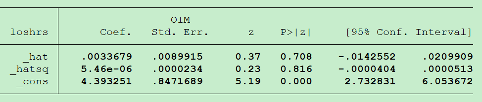

Note8 Glm Diagnostics
Assessing the Link Function
Pregibon link test
Run GLM.
Obtain fitted values for linear predictor.
Create new variables \((X\hat{\beta})^2\).
Run model with \(X\hat{\beta} + (X\hat{\beta})^2\) as predictors.
evaluate: if p-value is not significant for \((X\hat{\beta})^2\) term, link function is correctly specified.

The p-value for _hatsq is greater 0.05 which is not statistically significant indicatiing that the model seems to be well specified.
Outlier Detection
Cook’s distance measures the aggregate change in the estimated coefficients when each observation is left out of the estimation.
Rules of thumb:
\(C_i > \frac{4}{n-p-1}\) n = number of total observations. p = number of coefficients
\(C_i > \frac{3\sum{C_i}}{n}\)
\(C_i > 1\)
R-square
In ordinary least squares(OLS) regression, \(R^2 = 1 - \frac{\sum_{i=1}^N(y_i - \hat{y_i})^2}{\sum_{i=1}^N(y_i - \bar{y})^2}\)
N is the number of pbservations in the model.
y is the dependent variable.
y-hat is the value predicted by the model.
\(R^2\) is typically interpreted as % variance explained, but \(Pseudo-R^2 = (correlation(y,\hat{y}))^2\)
Information Criteria
The AIC and BIC are two popular measures for comparing maximum likelihood models.1
AIC = Akaike Information Criterion
\(AIC = -2*ln(likelihood) + 2*k\)
BIC = Bayesian Information Criterion
\(BIC = -2*ln(likelihood) + ln(N)*k\)
k = number of parameters estimated
N = number of observations
AIC and BIC can be viewed as measures that combine fit and complexity.
Fit is measured negatively by −2 × ln(likelihood); the larger the value, the worse the fit.
Complexity is measured positively, either by 2 × k (AIC) or ln(N) × k (BIC).
Given two models fit on the same data, the model with the smaller value of the information criterion is considered to be better.
Residuals
Mengna Zhang
First Year Graduate Student
I am a first year graduate student in Data Science department of UMMC.